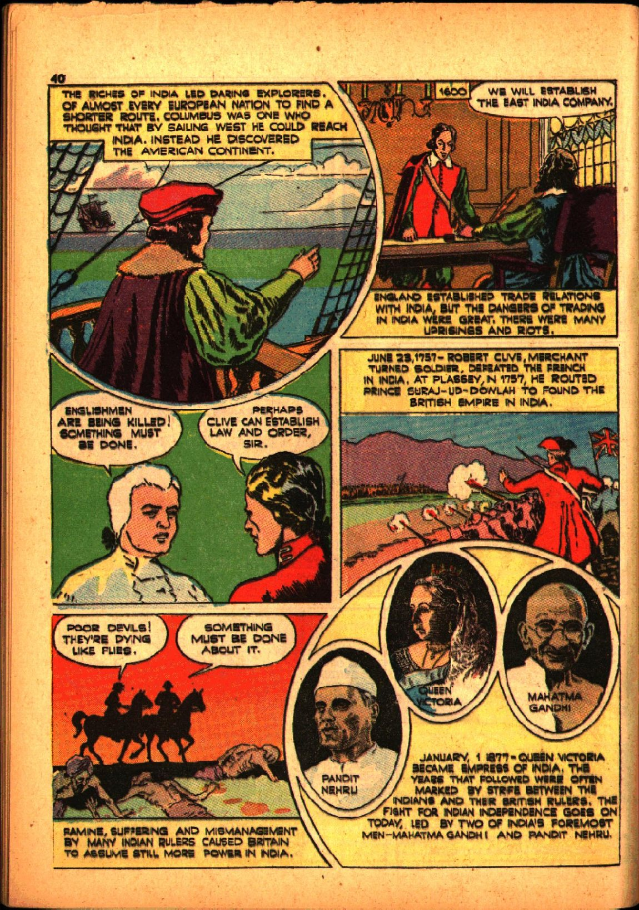

You're the fact-checker. For each part: read the page on the left → get the check right → then a second check or 1–2 sentences. Done = 4 green parts, then turn in at the bottom.
Content note: These comics were made to teach a lesson, so they tell one side. The 1943 comic praises British rule; the 1958 comic was made to teach nonviolence to civil rights marchers. Page 1 shows starving people, and page 2 shows soldiers shooting into a crowd.
Word help (tap to open)
- Colony = a land ruled by another country far away
- Independence = when a country rules itself
- Nonviolent protest = fighting an unfair rule without hurting anyone
- Boycott = refusing to buy something as a protest
- Famine = when huge numbers of people starve
- Partition = splitting one land into two countries
- Gandhi (say "GAHN-dee") · Nehru (say "NAY-roo")

Click the page to make it bigger.
Turn in your work
Your work saves on this device, so you can come back later. Your teacher sees it after you turn it in.
Comics: Reader page 1 is page 40 of True Comics #20 (1943), Parents’ Magazine Institute. Scan: Internet Archive. Reader pages 2–4 are the Gandhi section of Martin Luther King and the Montgomery Story (1958), Fellowship of Reconciliation; script by Alfred Hassler and Benton Resnik, art by Sy Barry. Scan: Internet Archive. Reader pages 3 and 4 are the top and bottom of one comic page. Shown as historical sources for classroom study.